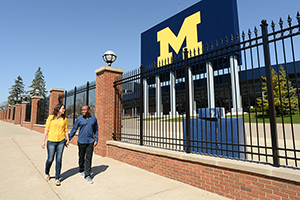
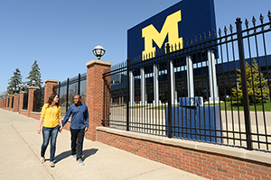

About Me

I graduated with a BA in History from Adrian College and spent a few years gaining financial planning and recruiting experience prior to finding my calling. I developed a strong interest in process improvement and implementation, and was determined to find ways to develop my skills. I entered into the University of Michigan’s School of Information in Fall of 2015 as a rather non traditional part time student. I continued to work full tie as I pursued my specialization in Human Computer Interaction, focusing on Usability Research and Needs Evaluation. I completed my internship at Quicken Loans in Downtown Detroit as a Business Metrics Analyst Intern, and hope to graduate in December 2018

Adobe Photoshop, Illustrator, InDesign, Microsoft Word, Excel, PowerPoint, and Access, Google Sheets and Analytics, SPSS, Usability testing, User Interviews, Questionnaire Design, Web Design, Python
I live with my husband, Nate, daughter, Violet, and two cats, Edgar and Eleanor, in Westland. In my free time, I enjoy reading, binging Netflix, baking, and making candles.
 
